Held-out observed pairs. Supportive/counterexamples are extremes in the frozen direction, one per distinct prompt; random audit uses a seeded hash ordering. Examples are illustrative, not typicality or causal evidence. The CSV is a blank human annotation template.
green-painted (preferred direction frozen on discovery) supportive a bright fantasy city built between cliffs, sleek glass buildings, elegant bridges between stalactites, illustration, raining, dark and moody lighting, at night, digital art, oil painting, cold blue tones, fantasy, 8 k, trending on artstation, detailed
preferred: 0.2512 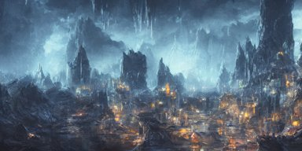
rejected: 0.1763 Preferred − rejected: +0.0749; event imagereward:test:010921-0064. Unverified.
supportive funny peanut butter
preferred: 0.2586 rejected: 0.1889 Preferred − rejected: +0.0697; event imagereward:test:010856-0009. Unverified.
counterexample the pope in saving private james ryan
preferred: 0.2423 rejected: 0.3281 Preferred − rejected: -0.0857; event imagereward:test:010918-0030. Unverified.
counterexample film still of the geisha robot from ghost in the shell, cinematic lighting, 3 5 mm, high resolution
preferred: 0.2009 rejected: 0.2817 Preferred − rejected: -0.0808; event imagereward:test:008289-0059. Unverified.
random_audit Horrifying creature, haunted, horror
preferred: 0.2218 rejected: 0.2159 Preferred − rejected: +0.0059; event imagereward:test:009006-0102. Unverified.
random_audit a bright fantasy city built between cliffs, sleek glass buildings, elegant bridges between stalactites, illustration, raining, dark and moody lighting, at night, digital art, oil painting, cold blue tones, fantasy, 8 k, trending on artstation, detailed
preferred: 0.2512 rejected: 0.1779 Preferred − rejected: +0.0734; event imagereward:test:010921-0064. Unverified.
green-and-yellow (preferred direction frozen on discovery) supportive a bright fantasy city built between cliffs, sleek glass buildings, elegant bridges between stalactites, illustration, raining, dark and moody lighting, at night, digital art, oil painting, cold blue tones, fantasy, 8 k, trending on artstation, detailed
preferred: 0.2714 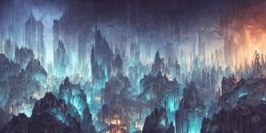
rejected: 0.1603 Preferred − rejected: +0.1111; event imagereward:test:010921-0064. Unverified.
supportive cinematic movie scene, beautiful Product shot film still of a Syd Mead futuristic modern sleek automobile speeding down a wet street at night in cyperpunk city, motion, hard surface modeling, volumetric soft lighting, style of Stanley Kubrick cinematography, 8k H 768
preferred: 0.2787 rejected: 0.1722 Preferred − rejected: +0.1065; event imagereward:test:011041-0080. Unverified.
counterexample mother theresa eating a terrapin
preferred: 0.1772 rejected: 0.3478 Preferred − rejected: -0.1706; event imagereward:test:010817-0088. Unverified.
counterexample the pope in saving private james ryan
preferred: 0.2407 rejected: 0.3483 Preferred − rejected: -0.1076; event imagereward:test:010918-0030. Unverified.
random_audit muscular man wearing a leather harness and hat
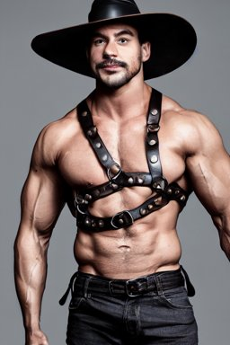
preferred: 0.1636 rejected: 0.1752 Preferred − rejected: -0.0115; event imagereward:test:007189-0066. Unverified.
random_audit Boris Johnson and Eminen on a stage having an epic rap battle together
preferred: 0.1953 rejected: 0.1890 Preferred − rejected: +0.0064; event imagereward:test:007713-0046. Unverified.
emerald-green (preferred direction frozen on discovery) supportive a bright fantasy city built between cliffs, sleek glass buildings, elegant bridges between stalactites, illustration, raining, dark and moody lighting, at night, digital art, oil painting, cold blue tones, fantasy, 8 k, trending on artstation, detailed
preferred: 0.2390 rejected: 0.1601 Preferred − rejected: +0.0789; event imagereward:test:010921-0064. Unverified.
supportive bioluminescent crystal ball abstract sculpture, neon, fluorescent, magenta hyper detailed, red & purple beauteous biomechanical organic lightpainting, 8 k scenery, perfect lighting balance,
preferred: 0.2813 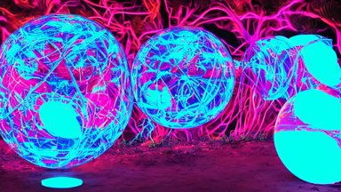
rejected: 0.2161 Preferred − rejected: +0.0653; event imagereward:test:008275-0162. Unverified.
counterexample film still of the geisha robot from ghost in the shell, cinematic lighting, 3 5 mm, high resolution
preferred: 0.1820 rejected: 0.2950 Preferred − rejected: -0.1130; event imagereward:test:008289-0059. Unverified.
counterexample Drama King, photorealistic portrait, 8K, Cinematic lights
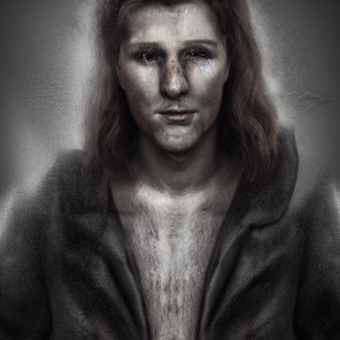
preferred: 0.1627 rejected: 0.2532 Preferred − rejected: -0.0905; event imagereward:test:007108-0023. Unverified.
random_audit a bright fantasy city built between cliffs, sleek glass buildings, elegant bridges between stalactites, illustration, raining, dark and moody lighting, at night, digital art, oil painting, cold blue tones, fantasy, 8 k, trending on artstation, detailed
preferred: 0.2390 rejected: 0.1787 Preferred − rejected: +0.0603; event imagereward:test:010921-0064. Unverified.
random_audit muscular man wearing a leather harness and hat
preferred: 0.1547 rejected: 0.1539 Preferred − rejected: +0.0008; event imagereward:test:007189-0066. Unverified.
green-gold (preferred direction frozen on discovery) supportive a bright fantasy city built between cliffs, sleek glass buildings, elegant bridges between stalactites, illustration, raining, dark and moody lighting, at night, digital art, oil painting, cold blue tones, fantasy, 8 k, trending on artstation, detailed
preferred: 0.2426 rejected: 0.1337 Preferred − rejected: +0.1089; event imagereward:test:010921-0064. Unverified.
supportive bioluminescent crystal ball abstract sculpture, neon, fluorescent, magenta hyper detailed, red & purple beauteous biomechanical organic lightpainting, 8 k scenery, perfect lighting balance,
preferred: 0.2717 rejected: 0.1924
Preferred − rejected: +0.0793; event imagereward:test:008275-0162. Unverified.
counterexample mother theresa eating a terrapin
preferred: 0.1481 rejected: 0.2665 Preferred − rejected: -0.1184; event imagereward:test:010817-0088. Unverified.
counterexample film still of the geisha robot from ghost in the shell, cinematic lighting, 3 5 mm, high resolution
preferred: 0.1582 rejected: 0.2504 Preferred − rejected: -0.0922; event imagereward:test:008289-0059. Unverified.
random_audit the pope in saving private james ryan
preferred: 0.2215 rejected: 0.2193 Preferred − rejected: +0.0022; event imagereward:test:010918-0030. Unverified.
random_audit astronaut drifting afloat in space, in the darkness away from anyone else, alone, digital render, detailed illustration, black background dotted with stars, concept art, realistic, 8 k
preferred: 0.1924 rejected: 0.2069 Preferred − rejected: -0.0145; event imagereward:test:007019-0095. Unverified.
neon-green (preferred direction frozen on discovery) supportive a bright fantasy city built between cliffs, sleek glass buildings, elegant bridges between stalactites, illustration, raining, dark and moody lighting, at night, digital art, oil painting, cold blue tones, fantasy, 8 k, trending on artstation, detailed
preferred: 0.2836 rejected: 0.1512 Preferred − rejected: +0.1324; event imagereward:test:010921-0064. Unverified.
supportive realistic photography of a man 3 5 years old with a bit of bear, short hair, few wrinkles around eyes, sexy, cinematographic, cinematic light, close up view, intense, colorize, 8 0 mm lens
preferred: 0.2264 rejected: 0.1385 Preferred − rejected: +0.0879; event imagereward:test:001260-0073. Unverified.
counterexample mother theresa eating a terrapin
preferred: 0.1543 rejected: 0.2964 Preferred − rejected: -0.1420; event imagereward:test:010817-0088. Unverified.
counterexample funny peanut butter
preferred: 0.2127 rejected: 0.3329 Preferred − rejected: -0.1202; event imagereward:test:010856-0009. Unverified.
random_audit the pope in saving private james ryan
preferred: 0.2170 rejected: 0.2656 Preferred − rejected: -0.0486; event imagereward:test:010918-0030. Unverified.
random_audit bioluminescent crystal ball abstract sculpture, neon, fluorescent, magenta hyper detailed, red & purple beauteous biomechanical organic lightpainting, 8 k scenery, perfect lighting balance,
preferred: 0.3751 rejected: 0.2933
Preferred − rejected: +0.0818; event imagereward:test:008275-0162. Unverified.
bright-green (preferred direction frozen on discovery) supportive a bright fantasy city built between cliffs, sleek glass buildings, elegant bridges between stalactites, illustration, raining, dark and moody lighting, at night, digital art, oil painting, cold blue tones, fantasy, 8 k, trending on artstation, detailed
preferred: 0.2632 rejected: 0.1672 Preferred − rejected: +0.0960; event imagereward:test:010921-0064. Unverified.
supportive bioluminescent crystal ball abstract sculpture, neon, fluorescent, magenta hyper detailed, red & purple beauteous biomechanical organic lightpainting, 8 k scenery, perfect lighting balance,
preferred: 0.3448 rejected: 0.2574
Preferred − rejected: +0.0875; event imagereward:test:008275-0162. Unverified.
counterexample mother theresa eating a terrapin
preferred: 0.2005 rejected: 0.2986 Preferred − rejected: -0.0980; event imagereward:test:010817-0088. Unverified.
counterexample funny peanut butter
preferred: 0.2507 rejected: 0.3265 Preferred − rejected: -0.0758; event imagereward:test:010856-0009. Unverified.
random_audit the pope in saving private james ryan
preferred: 0.2369 rejected: 0.2942 Preferred − rejected: -0.0573; event imagereward:test:010918-0030. Unverified.
random_audit a bright fantasy city built between cliffs, sleek glass buildings, elegant bridges between stalactites, illustration, raining, dark and moody lighting, at night, digital art, oil painting, cold blue tones, fantasy, 8 k, trending on artstation, detailed
preferred: 0.1862 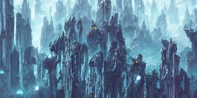
rejected: 0.2216 Preferred − rejected: -0.0354; event imagereward:test:010921-0064. Unverified.
green-black (preferred direction frozen on discovery) supportive bioluminescent crystal ball abstract sculpture, neon, fluorescent, magenta hyper detailed, red & purple beauteous biomechanical organic lightpainting, 8 k scenery, perfect lighting balance,
preferred: 0.3158 rejected: 0.2255
Preferred − rejected: +0.0903; event imagereward:test:008275-0162. Unverified.
supportive a bright fantasy city built between cliffs, sleek glass buildings, elegant bridges between stalactites, illustration, raining, dark and moody lighting, at night, digital art, oil painting, cold blue tones, fantasy, 8 k, trending on artstation, detailed
preferred: 0.2243 rejected: 0.1685 Preferred − rejected: +0.0557; event imagereward:test:010921-0064. Unverified.
counterexample Drama King, photorealistic portrait, 8K, Cinematic lights
preferred: 0.1776 rejected: 0.3154 Preferred − rejected: -0.1378; event imagereward:test:007108-0023. Unverified.
counterexample mother theresa eating a terrapin
preferred: 0.1993 rejected: 0.3164 Preferred − rejected: -0.1171; event imagereward:test:010817-0088. Unverified.
random_audit Horrifying creature, haunted, horror
preferred: 0.2085 rejected: 0.2013 Preferred − rejected: +0.0072; event imagereward:test:009006-0102. Unverified.
random_audit a bright fantasy city built between cliffs, sleek glass buildings, elegant bridges between stalactites, illustration, raining, dark and moody lighting, at night, digital art, oil painting, cold blue tones, fantasy, 8 k, trending on artstation, detailed
preferred: 0.1707 rejected: 0.2421 Preferred − rejected: -0.0714; event imagereward:test:010921-0064. Unverified.
green (preferred direction frozen on discovery) supportive bioluminescent crystal ball abstract sculpture, neon, fluorescent, magenta hyper detailed, red & purple beauteous biomechanical organic lightpainting, 8 k scenery, perfect lighting balance,
preferred: 0.2964 rejected: 0.2208
Preferred − rejected: +0.0757; event imagereward:test:008275-0162. Unverified.
supportive a bright fantasy city built between cliffs, sleek glass buildings, elegant bridges between stalactites, illustration, raining, dark and moody lighting, at night, digital art, oil painting, cold blue tones, fantasy, 8 k, trending on artstation, detailed
preferred: 0.2247 rejected: 0.1518 Preferred − rejected: +0.0729; event imagereward:test:010921-0064. Unverified.
counterexample funny peanut butter
preferred: 0.2388 rejected: 0.3156 Preferred − rejected: -0.0768; event imagereward:test:010856-0009. Unverified.
counterexample mother theresa eating a terrapin
preferred: 0.2019 rejected: 0.2701 Preferred − rejected: -0.0682; event imagereward:test:010817-0088. Unverified.
random_audit bioluminescent crystal ball abstract sculpture, neon, fluorescent, magenta hyper detailed, red & purple beauteous biomechanical organic lightpainting, 8 k scenery, perfect lighting balance,
preferred: 0.2964 rejected: 0.2208
Preferred − rejected: +0.0757; event imagereward:test:008275-0162. Unverified.
random_audit Horrifying creature, haunted, horror
preferred: 0.1706 rejected: 0.1891 Preferred − rejected: -0.0185; event imagereward:test:009006-0102. Unverified.
moss-green (preferred direction frozen on discovery) supportive the pope in saving private james ryan
preferred: 0.2372 rejected: 0.1889 Preferred − rejected: +0.0483; event imagereward:test:010918-0030. Unverified.
supportive funny peanut butter
preferred: 0.2420 rejected: 0.1948 Preferred − rejected: +0.0472; event imagereward:test:010856-0009. Unverified.
counterexample Boris Johnson and Eminen on a stage having an epic rap battle together
preferred: 0.1377 rejected: 0.2003 Preferred − rejected: -0.0626; event imagereward:test:007713-0046. Unverified.
counterexample Drama King, photorealistic portrait, 8K, Cinematic lights
preferred: 0.1832 rejected: 0.2373 Preferred − rejected: -0.0541; event imagereward:test:007108-0023. Unverified.
random_audit astronaut drifting afloat in space, in the darkness away from anyone else, alone, digital render, detailed illustration, black background dotted with stars, concept art, realistic, 8 k
preferred: 0.2102 rejected: 0.2334 Preferred − rejected: -0.0232; event imagereward:test:007019-0095. Unverified.
random_audit Boris Johnson and Eminen on a stage having an epic rap battle together
preferred: 0.1377 rejected: 0.1749 Preferred − rejected: -0.0373; event imagereward:test:007713-0046. Unverified.
green-striped (preferred direction frozen on discovery) supportive a bright fantasy city built between cliffs, sleek glass buildings, elegant bridges between stalactites, illustration, raining, dark and moody lighting, at night, digital art, oil painting, cold blue tones, fantasy, 8 k, trending on artstation, detailed
preferred: 0.1989 rejected: 0.1177 Preferred − rejected: +0.0812; event imagereward:test:010921-0064. Unverified.
supportive bioluminescent crystal ball abstract sculpture, neon, fluorescent, magenta hyper detailed, red & purple beauteous biomechanical organic lightpainting, 8 k scenery, perfect lighting balance,
preferred: 0.2508 rejected: 0.1823
Preferred − rejected: +0.0685; event imagereward:test:008275-0162. Unverified.
counterexample Drama King, photorealistic portrait, 8K, Cinematic lights
preferred: 0.1522 rejected: 0.2881 Preferred − rejected: -0.1359; event imagereward:test:007108-0023. Unverified.
counterexample mother theresa eating a terrapin
preferred: 0.1833 rejected: 0.2882 Preferred − rejected: -0.1050; event imagereward:test:010817-0088. Unverified.
random_audit bioluminescent crystal ball abstract sculpture, neon, fluorescent, magenta hyper detailed, red & purple beauteous biomechanical organic lightpainting, 8 k scenery, perfect lighting balance,
preferred: 0.2508 rejected: 0.2507 Preferred − rejected: +0.0001; event imagereward:test:008275-0162. Unverified.
random_audit astronaut drifting afloat in space, in the darkness away from anyone else, alone, digital render, detailed illustration, black background dotted with stars, concept art, realistic, 8 k
preferred: 0.2037 rejected: 0.2116
Preferred − rejected: -0.0079; event imagereward:test:007019-0095. Unverified.
wire-mesh (rejected direction frozen on discovery) supportive muscular man wearing a leather harness and hat
preferred: 0.1883 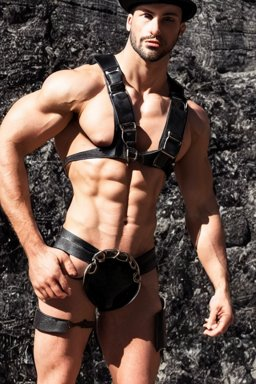
rejected: 0.3301 Preferred − rejected: -0.1418; event imagereward:test:007189-0066. Unverified.
supportive realistic photography of a man 3 5 years old with a bit of bear, short hair, few wrinkles around eyes, sexy, cinematographic, cinematic light, close up view, intense, colorize, 8 0 mm lens
preferred: 0.1977 rejected: 0.3119 Preferred − rejected: -0.1142; event imagereward:test:001260-0073. Unverified.
counterexample funny peanut butter
preferred: 0.2461 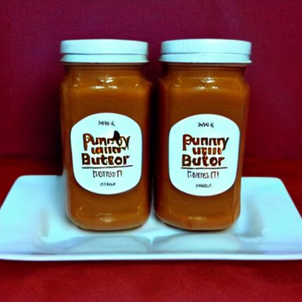
rejected: 0.1840 Preferred − rejected: +0.0621; event imagereward:test:010856-0009. Unverified.
counterexample the pope in saving private james ryan
preferred: 0.2472 rejected: 0.1889 Preferred − rejected: +0.0584; event imagereward:test:010918-0030. Unverified.
random_audit a bright fantasy city built between cliffs, sleek glass buildings, elegant bridges between stalactites, illustration, raining, dark and moody lighting, at night, digital art, oil painting, cold blue tones, fantasy, 8 k, trending on artstation, detailed
preferred: 0.1514 rejected: 0.1673 Preferred − rejected: -0.0159; event imagereward:test:010921-0064. Unverified.
random_audit film still of the geisha robot from ghost in the shell, cinematic lighting, 3 5 mm, high resolution
preferred: 0.2467 rejected: 0.2437 Preferred − rejected: +0.0029; event imagereward:test:008289-0059. Unverified.
hail (rejected direction frozen on discovery) supportive cinematic movie scene, beautiful Product shot film still of a Syd Mead futuristic modern sleek automobile speeding down a wet street at night in cyperpunk city, motion, hard surface modeling, volumetric soft lighting, style of Stanley Kubrick cinematography, 8k H 768
preferred: 0.1956 rejected: 0.2503 Preferred − rejected: -0.0547; event imagereward:test:011041-0080. Unverified.
supportive a group of artists creating a masterpiece, glorious, in the style of artgerm and charlie bowater and atey ghailan and mike mignola, epic lighting, vibrant colors and hard shadows and strong rim light, very coherent, comic cover art, plain background, trending on artstation
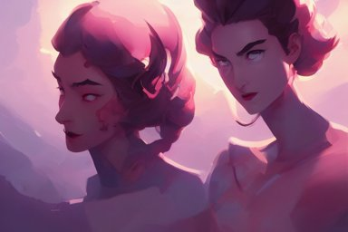
preferred: 0.2171 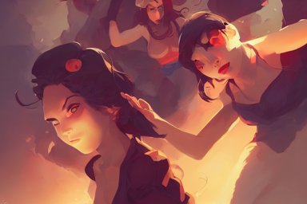
rejected: 0.2608 Preferred − rejected: -0.0438; event imagereward:test:008615-0007. Unverified.
counterexample Drama King, photorealistic portrait, 8K, Cinematic lights
preferred: 0.2543 rejected: 0.1801 Preferred − rejected: +0.0742; event imagereward:test:007108-0023. Unverified.
counterexample astronaut drifting afloat in space, in the darkness away from anyone else, alone, digital render, detailed illustration, black background dotted with stars, concept art, realistic, 8 k
preferred: 0.2977 rejected: 0.2362 Preferred − rejected: +0.0615; event imagereward:test:007019-0095. Unverified.
random_audit cinematic movie scene, beautiful Product shot film still of a Syd Mead futuristic modern sleek automobile speeding down a wet street at night in cyperpunk city, motion, hard surface modeling, volumetric soft lighting, style of Stanley Kubrick cinematography, 8k H 768
preferred: 0.2332 rejected: 0.2503
Preferred − rejected: -0.0170; event imagereward:test:011041-0080. Unverified.
random_audit bioluminescent crystal ball abstract sculpture, neon, fluorescent, magenta hyper detailed, red & purple beauteous biomechanical organic lightpainting, 8 k scenery, perfect lighting balance,
preferred: 0.2341 rejected: 0.2373
Preferred − rejected: -0.0032; event imagereward:test:008275-0162. Unverified.
bench-top (rejected direction frozen on discovery) supportive the pope in saving private james ryan
preferred: 0.2066 rejected: 0.2842 Preferred − rejected: -0.0776; event imagereward:test:010918-0030. Unverified.
supportive astronaut drifting afloat in space, in the darkness away from anyone else, alone, digital render, detailed illustration, black background dotted with stars, concept art, realistic, 8 k
preferred: 0.2043 rejected: 0.2578 Preferred − rejected: -0.0534; event imagereward:test:007019-0095. Unverified.
counterexample Boris Johnson and Eminen on a stage having an epic rap battle together
preferred: 0.2925 rejected: 0.1792 Preferred − rejected: +0.1133; event imagereward:test:007713-0046. Unverified.
counterexample funny peanut butter
preferred: 0.3028 rejected: 0.2542 Preferred − rejected: +0.0486; event imagereward:test:010856-0009. Unverified.
random_audit bioluminescent crystal ball abstract sculpture, neon, fluorescent, magenta hyper detailed, red & purple beauteous biomechanical organic lightpainting, 8 k scenery, perfect lighting balance,
preferred: 0.1764 rejected: 0.2273 Preferred − rejected: -0.0509; event imagereward:test:008275-0162. Unverified.
random_audit a bright fantasy city built between cliffs, sleek glass buildings, elegant bridges between stalactites, illustration, raining, dark and moody lighting, at night, digital art, oil painting, cold blue tones, fantasy, 8 k, trending on artstation, detailed
preferred: 0.1642 rejected: 0.1635 Preferred − rejected: +0.0007; event imagereward:test:010921-0064. Unverified.
crock (rejected direction frozen on discovery) supportive bioluminescent crystal ball abstract sculpture, neon, fluorescent, magenta hyper detailed, red & purple beauteous biomechanical organic lightpainting, 8 k scenery, perfect lighting balance,
preferred: 0.1509 rejected: 0.2006 Preferred − rejected: -0.0497; event imagereward:test:008275-0162. Unverified.
supportive Drama King, photorealistic portrait, 8K, Cinematic lights
preferred: 0.1939 rejected: 0.2402 Preferred − rejected: -0.0463; event imagereward:test:007108-0023. Unverified.
counterexample funny peanut butter
preferred: 0.2510 rejected: 0.2293 Preferred − rejected: +0.0217; event imagereward:test:010856-0009. Unverified.
counterexample cinematic movie scene, beautiful Product shot film still of a Syd Mead futuristic modern sleek automobile speeding down a wet street at night in cyperpunk city, motion, hard surface modeling, volumetric soft lighting, style of Stanley Kubrick cinematography, 8k H 768
preferred: 0.1693 rejected: 0.1476 Preferred − rejected: +0.0217; event imagereward:test:011041-0080. Unverified.
random_audit a bright fantasy city built between cliffs, sleek glass buildings, elegant bridges between stalactites, illustration, raining, dark and moody lighting, at night, digital art, oil painting, cold blue tones, fantasy, 8 k, trending on artstation, detailed
preferred: 0.1565 rejected: 0.1537 Preferred − rejected: +0.0028; event imagereward:test:010921-0064. Unverified.
random_audit Horrifying creature, haunted, horror
preferred: 0.2149 rejected: 0.2100 Preferred − rejected: +0.0049; event imagereward:test:009006-0102. Unverified.
bedrail (rejected direction frozen on discovery) supportive film still of the geisha robot from ghost in the shell, cinematic lighting, 3 5 mm, high resolution
preferred: 0.1993 rejected: 0.2786 Preferred − rejected: -0.0793; event imagereward:test:008289-0059. Unverified.
supportive the pope in saving private james ryan
preferred: 0.2114 rejected: 0.2519 Preferred − rejected: -0.0405; event imagereward:test:010918-0030. Unverified.
counterexample Boris Johnson and Eminen on a stage having an epic rap battle together
preferred: 0.2933 rejected: 0.1819 Preferred − rejected: +0.1114; event imagereward:test:007713-0046. Unverified.
counterexample realistic photography of a man 3 5 years old with a bit of bear, short hair, few wrinkles around eyes, sexy, cinematographic, cinematic light, close up view, intense, colorize, 8 0 mm lens
preferred: 0.2695 rejected: 0.2003 Preferred − rejected: +0.0691; event imagereward:test:001260-0073. Unverified.
random_audit Boris Johnson and Eminen on a stage having an epic rap battle together
preferred: 0.2933 rejected: 0.2510 Preferred − rejected: +0.0424; event imagereward:test:007713-0046. Unverified.
random_audit astronaut drifting afloat in space, in the darkness away from anyone else, alone, digital render, detailed illustration, black background dotted with stars, concept art, realistic, 8 k
preferred: 0.2123 rejected: 0.2517 Preferred − rejected: -0.0394; event imagereward:test:007019-0095. Unverified.
vise-like (rejected direction frozen on discovery) supportive bioluminescent crystal ball abstract sculpture, neon, fluorescent, magenta hyper detailed, red & purple beauteous biomechanical organic lightpainting, 8 k scenery, perfect lighting balance,
preferred: 0.2318 rejected: 0.2974 Preferred − rejected: -0.0656; event imagereward:test:008275-0162. Unverified.
supportive a group of artists creating a masterpiece, glorious, in the style of artgerm and charlie bowater and atey ghailan and mike mignola, epic lighting, vibrant colors and hard shadows and strong rim light, very coherent, comic cover art, plain background, trending on artstation
preferred: 0.2710 rejected: 0.3328 Preferred − rejected: -0.0618; event imagereward:test:008615-0007. Unverified.
counterexample cinematic movie scene, beautiful Product shot film still of a Syd Mead futuristic modern sleek automobile speeding down a wet street at night in cyperpunk city, motion, hard surface modeling, volumetric soft lighting, style of Stanley Kubrick cinematography, 8k H 768
preferred: 0.2962 rejected: 0.2437 Preferred − rejected: +0.0525; event imagereward:test:011041-0080. Unverified.
counterexample astronaut drifting afloat in space, in the darkness away from anyone else, alone, digital render, detailed illustration, black background dotted with stars, concept art, realistic, 8 k
preferred: 0.3133 rejected: 0.2631 Preferred − rejected: +0.0502; event imagereward:test:007019-0095. Unverified.
random_audit astronaut drifting afloat in space, in the darkness away from anyone else, alone, digital render, detailed illustration, black background dotted with stars, concept art, realistic, 8 k
preferred: 0.3133 rejected: 0.2704 Preferred − rejected: +0.0429; event imagereward:test:007019-0095. Unverified.
random_audit cinematic movie scene, beautiful Product shot film still of a Syd Mead futuristic modern sleek automobile speeding down a wet street at night in cyperpunk city, motion, hard surface modeling, volumetric soft lighting, style of Stanley Kubrick cinematography, 8k H 768
preferred: 0.2962 rejected: 0.2437 Preferred − rejected: +0.0525; event imagereward:test:011041-0080. Unverified.
vise (rejected direction frozen on discovery) supportive bioluminescent crystal ball abstract sculpture, neon, fluorescent, magenta hyper detailed, red & purple beauteous biomechanical organic lightpainting, 8 k scenery, perfect lighting balance,
preferred: 0.1934 rejected: 0.2750 Preferred − rejected: -0.0816; event imagereward:test:008275-0162. Unverified.
supportive film still of the geisha robot from ghost in the shell, cinematic lighting, 3 5 mm, high resolution
preferred: 0.2419 rejected: 0.3143 Preferred − rejected: -0.0724; event imagereward:test:008289-0059. Unverified.
counterexample astronaut drifting afloat in space, in the darkness away from anyone else, alone, digital render, detailed illustration, black background dotted with stars, concept art, realistic, 8 k
preferred: 0.2875 rejected: 0.2349 Preferred − rejected: +0.0526; event imagereward:test:007019-0095. Unverified.
counterexample cinematic movie scene, beautiful Product shot film still of a Syd Mead futuristic modern sleek automobile speeding down a wet street at night in cyperpunk city, motion, hard surface modeling, volumetric soft lighting, style of Stanley Kubrick cinematography, 8k H 768
preferred: 0.2741 rejected: 0.2300 Preferred − rejected: +0.0441; event imagereward:test:011041-0080. Unverified.
random_audit Drama King, photorealistic portrait, 8K, Cinematic lights
preferred: 0.2125 rejected: 0.2124 Preferred − rejected: +0.0001; event imagereward:test:007108-0023. Unverified.
random_audit a bright fantasy city built between cliffs, sleek glass buildings, elegant bridges between stalactites, illustration, raining, dark and moody lighting, at night, digital art, oil painting, cold blue tones, fantasy, 8 k, trending on artstation, detailed
preferred: 0.2005 rejected: 0.1918 Preferred − rejected: +0.0087; event imagereward:test:010921-0064. Unverified.
dustpan (rejected direction frozen on discovery) supportive film still of the geisha robot from ghost in the shell, cinematic lighting, 3 5 mm, high resolution
preferred: 0.1769 rejected: 0.2721 Preferred − rejected: -0.0952; event imagereward:test:008289-0059. Unverified.
supportive the pope in saving private james ryan
preferred: 0.1757 rejected: 0.2453 Preferred − rejected: -0.0696; event imagereward:test:010918-0030. Unverified.
counterexample mother theresa eating a terrapin
preferred: 0.2485 rejected: 0.1826 Preferred − rejected: +0.0659; event imagereward:test:010817-0088. Unverified.
counterexample a bright fantasy city built between cliffs, sleek glass buildings, elegant bridges between stalactites, illustration, raining, dark and moody lighting, at night, digital art, oil painting, cold blue tones, fantasy, 8 k, trending on artstation, detailed
preferred: 0.1993 rejected: 0.1433 Preferred − rejected: +0.0560; event imagereward:test:010921-0064. Unverified.
random_audit Horrifying creature, haunted, horror
preferred: 0.1935 rejected: 0.1875 Preferred − rejected: +0.0060; event imagereward:test:009006-0102. Unverified.
random_audit astronaut drifting afloat in space, in the darkness away from anyone else, alone, digital render, detailed illustration, black background dotted with stars, concept art, realistic, 8 k
preferred: 0.1965 rejected: 0.2551 Preferred − rejected: -0.0586; event imagereward:test:007019-0095. Unverified.
scooper (rejected direction frozen on discovery) supportive astronaut drifting afloat in space, in the darkness away from anyone else, alone, digital render, detailed illustration, black background dotted with stars, concept art, realistic, 8 k
preferred: 0.2219 rejected: 0.2804 Preferred − rejected: -0.0585; event imagereward:test:007019-0095. Unverified.
supportive Horrifying creature, haunted, horror
preferred: 0.1883 rejected: 0.2372 Preferred − rejected: -0.0489; event imagereward:test:009006-0102. Unverified.
counterexample cute little dragon, gnome, elf, mage playing dnd at night in a medieval bar, fantasy, concept art, highly detailed, octane, unreal engine, anime, by laurel d austin, ghibly, disney, pixar, dreamworks
preferred: 0.3076 rejected: 0.2480 Preferred − rejected: +0.0596; event imagereward:test:007753-0023. Unverified.
counterexample cinematic movie scene, beautiful Product shot film still of a Syd Mead futuristic modern sleek automobile speeding down a wet street at night in cyperpunk city, motion, hard surface modeling, volumetric soft lighting, style of Stanley Kubrick cinematography, 8k H 768
preferred: 0.2559 rejected: 0.2021 Preferred − rejected: +0.0538; event imagereward:test:011041-0080. Unverified.
random_audit Drama King, photorealistic portrait, 8K, Cinematic lights
preferred: 0.1832 rejected: 0.1957
Preferred − rejected: -0.0125; event imagereward:test:007108-0023. Unverified.
random_audit a bright fantasy city built between cliffs, sleek glass buildings, elegant bridges between stalactites, illustration, raining, dark and moody lighting, at night, digital art, oil painting, cold blue tones, fantasy, 8 k, trending on artstation, detailed
preferred: 0.2271 rejected: 0.1888 Preferred − rejected: +0.0382; event imagereward:test:010921-0064. Unverified.
locker (rejected direction frozen on discovery) supportive film still of the geisha robot from ghost in the shell, cinematic lighting, 3 5 mm, high resolution
preferred: 0.2170 rejected: 0.2727 Preferred − rejected: -0.0556; event imagereward:test:008289-0059. Unverified.
supportive astronaut drifting afloat in space, in the darkness away from anyone else, alone, digital render, detailed illustration, black background dotted with stars, concept art, realistic, 8 k
preferred: 0.2534 rejected: 0.2949 Preferred − rejected: -0.0416; event imagereward:test:007019-0095. Unverified.
counterexample Drama King, photorealistic portrait, 8K, Cinematic lights
preferred: 0.2617 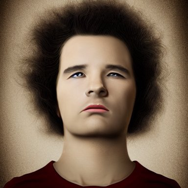
rejected: 0.2050 Preferred − rejected: +0.0567; event imagereward:test:007108-0023. Unverified.
counterexample astronaut drifting afloat in space, in the darkness away from anyone else, alone, digital render, detailed illustration, black background dotted with stars, concept art, realistic, 8 k
preferred: 0.2894 rejected: 0.2427 Preferred − rejected: +0.0467; event imagereward:test:007019-0095. Unverified.
random_audit a bright fantasy city built between cliffs, sleek glass buildings, elegant bridges between stalactites, illustration, raining, dark and moody lighting, at night, digital art, oil painting, cold blue tones, fantasy, 8 k, trending on artstation, detailed
preferred: 0.2193 rejected: 0.1846 Preferred − rejected: +0.0347; event imagereward:test:010921-0064. Unverified.
random_audit mother theresa eating a terrapin
preferred: 0.2076 rejected: 0.1770 Preferred − rejected: +0.0306; event imagereward:test:010817-0088. Unverified.